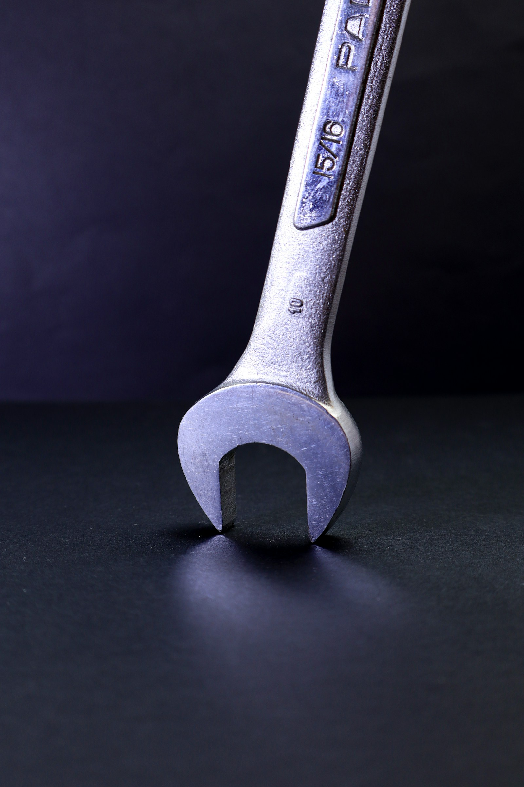

Вместе создадим инструмент, заточенный под вас и ваши задачи

Идея
Старое не работает, а новое не появилось: бизнес функционирует, но кончается топливо. Команда работает, если есть постоянный контроль. Пытаетесь поднажать ещё — некуда, нет сил, нет направления — и так во всём.
Это нормально: наступает новое время, пора обновить инструментарий.
Конкретный результат
Способ управления, который соответствует требованиям времени, вашему складу мышления и этапу жизни

С Практикума вы заберёте с собой инструмент, который:
Учитывает эпоху, прогресс, экономику, состояние рынка, стадию компании и лично вас
Создадите персонально под себя, будете понимать принцип его работы и сможете применять для любого управленческого кейса
Испытаете его на задачах внутри Практикума и получите обратную связь
Сможете использовать следующие 10 лет с учётом любых внутренних и внешних перемен
Один рабочий управленческий инструмент вместо двадцати инсайтов.
Цельность
Единая система для управления собой, командой, бизнесом
Рассматривайте сразу три уровня и связи между ними для самых эффективных решений.
Управление собой
Можно развивать работу и личную жизнь в одной системе
Управление командой
Люди, агенты и смешанные коллективы — с приземлением на ваши задачи
Управление бизнесом
Больше результата на единицу усилия
Среда
Форсайт-практикум спроектирован так, что работа происходит сразу на нескольких уровнях: стратегия, психология, методология и управленческая практика.
Основное время вы проводите в командах. Это создаёт среду, которая помогает сконцентрироваться и держать фокус на своей цели. Кроме того, командная работа имеет ряд полезных «побочек»:
Взгляд со стороны и открытая обратная связь помогут рассмотреть свои действия и решения со стороны
Поддержка и экспертиза от равных
Позиции, которые необходимы для результата, но не могут быть заняты одним человеком


Константин Орлов
Впервые попал на форсайт-игру участником в 1996 году, с 2002 года организует и проводит игры сам. Работает с корпорациями и внутри них, ведёт бизнес- и общественные проекты, преподаёт руководителям.
«Мне интересно исследовать эту границу. Между тем, что хочется осуществить, и тем, что позволяет наш сегодняшний менеджмент».
Microsoft: мероприятия для сотрудников и партнёров из СНГ, Восточной Европы и Средней Азии; был региональным представителем корпорации в Калининградской области
Преподаёт в SAP, Microsoft, РАНХиГС, «Сколково»; семь лет — в президентской программе подготовки управленческих кадров
Проекты: Рыбаков Фонд (директор по трансформации), Global Shapers (куратор-основатель), Балтийский Артек (руководитель бизнес-смены), Edutainment Club (директор)
Спикер и модератор Adam Smith Conference, TEDx, World Economic Forum, SAP Forum
24 года — развитие бизнес- и общественных проектов
22 года — академическое образование и корпоративные тренинги
15 лет — работа с международными корпорациями и внутри корпорации
Ещё раз, кратко
Под вашу ситуацию: учитываем обстоятельства бизнеса и особенности самого руководителя
Конкретный результат: собственный многоразовый инструмент управления
Непосредственная польза: применение на своих задачах уже во время практикума
Целостность: управление собой, командой и бизнесом в одной системе
Поддержка: команда и ведущий помогают разобраться и собрать результат
Посильность: отбор нужного, помощь ИИ, понятная организация работы и время на отдых
Хочу на практикум
По всем вопросам пишите: @Orlov_CSO
Вопросы и ответы
{{ item.a }}